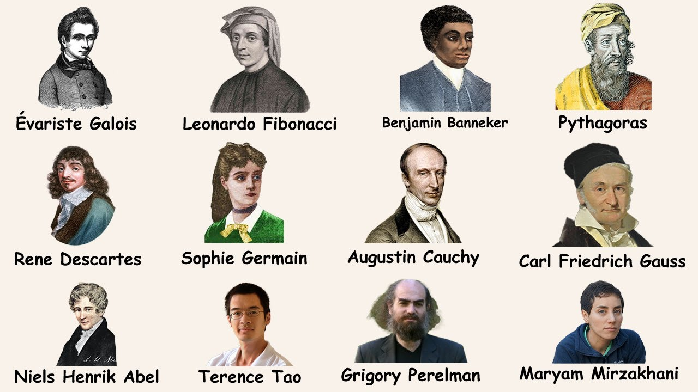
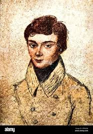
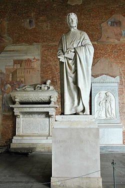

THE GREAT MATHEMATICIANS AND THEIR WORK
A number of brilliant mathematicians have shaped the field with their groundbreaking work. Aryabhata, an ancient Indian mathematician, is known for his contributions to algebra, trigonometry, and astronomy, including the concept of zero and the place value system. Srinivasa Ramanujan, another Indian mathematician, made significant advancements in number theory, infinite series, and continued fractions. His work has inspired further research in various mathematical fields. Pythagoras, a Greek philosopher and mathematician, is famous for the Pythagorean theorem, a fundamental concept in geometry. These are just a few examples of the many mathematicians who have left an indelible mark on the world of mathematics
This the link for the further reference of The Great MATHEMATICIANS:
Touch the link

EVARISTE GALOIS
Évariste Galois was a brilliant but short-lived French mathematician who made groundbreaking contributions to abstract algebra, particularly in the theory of equations and group theory. He is best known for developing Galois theory, which provides a way to determine whether a polynomial equation can be solved using radicals (like square roots, cube roots, etc.).

LEONARDO FIBONACCI
Leonardo Pisano, also known as Fibonacci, was an Italian mathematician who made significant contributions to the introduction of the Hindu-Arabic numeral system to Europe. He is best known for the Fibonacci sequence, a series of numbers where each number is the sum of the two preceding ones (e.g., 1, 1, 2, 3, 5, 8...).

Benjamin Banneker
Benjamin Banneker was a self-taught African American scientist, mathematician, astronomer, and surveyor, best known for his almanacs and his work on the survey of Washington, D.C. Despite limited formal education, he achieved significant accomplishments in various fields, including astronomy, mathematics, and mechanics.